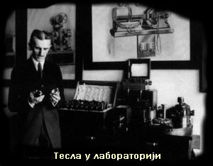
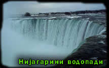

ЗАПОСЛЕЊЕ И СРЕДЊИ ЖИВОТ
СТУДИЈЕ И ЗАПОСЛЕЊЕ
На студије електротехнике креће 1875. године у Политехничку школу у Грацу у Аустроугарској царевини (данас Аустрија). Био је марљив студент. Полагао је све испите са највишим оценама. Професори су га волели и ценили. Након очеве смрти, тражио је стипендију од Матице српске, коју није добио. Због тога напушта студије у Грацу и наставља да студира политехнику у Прагу. Студије није никад завршио.
У периоду од 1881. до 1882. године запошљава се у Централном телеграфском уреду у Будимпешти. Управо ту започиње свој велики проналазачки период тако што је усавршио апарат за појачање гласа код телефона.
Фебруара 1882. године, приликом шетње у парку са пријатељем, долази на идеју о обртном магнетном пољу. После годину дана, 1883. године прелази у Едисонову Електричну компанију у Париз. Одмах је био запажен његов генијални ум и добија понуду да пређе у Њујорк (седиште компаније) у Едисонову лабораторију и да се бави проналазачким радом, што је Тесла врло радо прихватио.

ДОЛАЗАК У ЊУЈОРК
У Њујорк се преселио 1884. године. Врло брзо Тесла долази до епохалних открића у области физике и електротехнике: открива наизменичну струју, обртно магнетно поље, индукциони мотор, трансформатор, струје високе фреквенције, радио и телекоманду радио таласима. Његова открића довела су до неслагања са Едисоном, који је заступао мишљење да је будућност преноса електричне енергије у наизменичној струји. Такође, у Едисоновој компанији Тесла није био адекватно плаћен за своје иновације и зато већ 1885. године напушта Едисона и оснива сопствену компанију "Tesla Arc & Light Co." Почиње да прави прве моторе и генераторе наизменичних полифазних струја. Свој први патент пријављује Америчком патентном заводу 6. маја 1885. године, назвавши га "Комутатор за електричне динамо машине".
Следе убрзо и нови патенти. У периоду од 1887. до 1890. године Никола Тесла пријављује своје најпознатије патенте из области полифазних наизменичних струја. Проналаске јавно приказује у Америчком институту електроинжењера, 16. маја 1888. године, на свом предавању "Нови систем мотора и трансформатора наизменичне струје". На том предавању, увидевши вредност Теслиних проналазака, Вестингхаусова компанија откупљује првих седам Теслиних патената из области полифазних струја.
Вестингхаус финансира градњу прве електричне централе на наизменичну струју на Нијагариним водопадима (по Теслиним патентима). Никола Тесла је као дечак био задивљен описом Нијагариних водопада и маштао је да ту сагради велику турбину која ће стварати електричну струју. Двадесетак година касније, 15. новембра 1896. године, та жеља му се остварила пуштањем струје до града Буфала.

ДВЕ СТРУЈЕ
| Наизменична струја |
Наизменична струја је физичка појава протока наелектрисања кроз проводник тако да оно повремено мења смер кретања. Специјалну врсту наизменичне струје чини периодична наизменична струја. Код периодичне наизменичне струје се све промене напона и јачине струје времена мењају периодично |
|
Једносмерна струја
|
Једносмерна струја је физичка појава протока електричног наелектрисања од вишег ка нижем потенцијалу и непроменљивог је смера. Ово се обично дешава у проводницима, али наелектрисање такође може да тече и кроз полупроводнике, изолаторе и чак у вакууму као електрични млаз.Код једносмерне струје, налектрисање тече у истом правцу, за разлику од наизменичне струје.
|